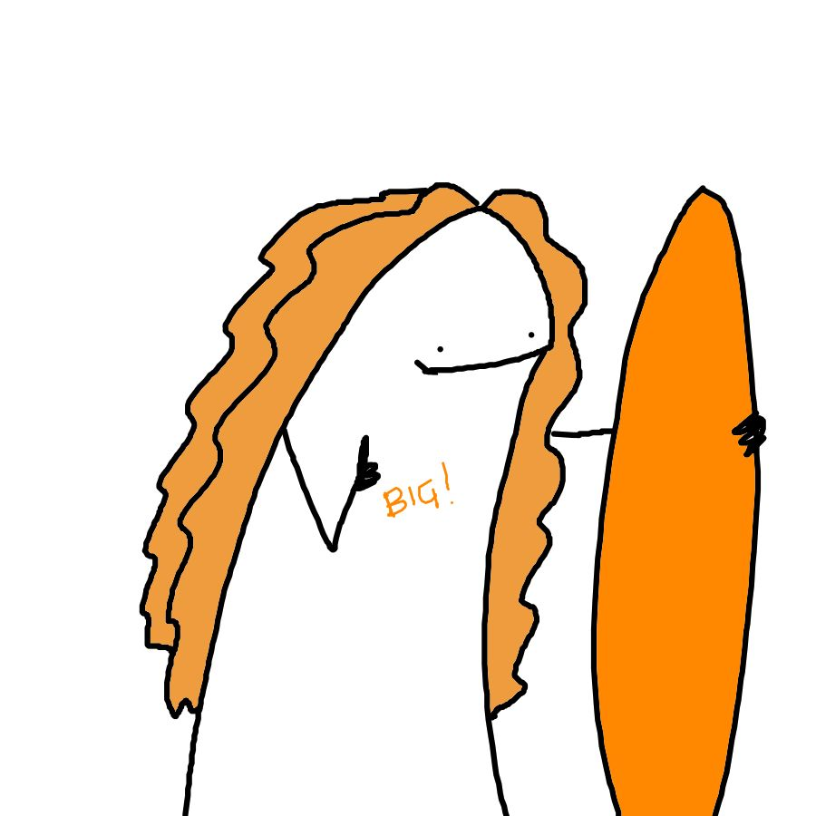

Bimb* di DHDK
Sezione dedicata alle superchicche con cui ho pianto sui progetti della magistrale e - in senso lato - ho condiviso gli ultimi tre anni. Sempre in questa sezione trovate anche alcuni protagonisti delle altre edizioni di DHDK, tra cui il presidente emerito Spadoni e il leggendario dottor Poltronieri (carte da collezione), ma anche gli aspiranti umanisti digitali Elia e Paoli (nuove uscite).
(Una menzione speciale anche ai numerosi successi dell'amministrazione Cavalli-Schimmenti, all'allegria di Virginia, alla spontaneità di Betty, alla solarità e la dolcezza di Ariele, alle numerose altre Giulie che non ho ringraziato individualmente, e a tutti gli altri elementi che hanno reso la terza edizione di DHDK una parte del mio cuore).
Abbandona gli studi e torma alla home :(Saroppini
Grazie Sara per essere rimasta esclusa come me da tutti i gruppi per il primo progetto della magistrale. Questa fortuita coincidenza (o forse è solo che non piacciamo agli altri, diciamocelo) mi ha regalato la prima delle numerose esperienze umane e lavorative con una delle persone più affini che abbia mai avuto la fortuna di incontrare in vita mia. Grazie per avermi dato più del sostegno che potessi permettermi di chiedere, riuscendo ad essere sempre sincera senza mai diventare pesante (queste sono quelle magie strane che riescono solo alle persone come te). Grazie per tutti i momenti tragicomici, le serate fuori, le risate, e la compagnia di quei tre giorni che ci è capitato per sbaglio di essere serene entrambe ed insieme negli ultimi tre anni.
AleCioffi
Grazie Ale per aver sempre bilanciato la mia caoticità con la tua equilibrata energia positiva, la metodicità e l’ordine che sono stati un modello tanto sul piano accademico, quanto nell’organizzazione della festa di laurea. Grazie anche per i video a sorpresa di animali su instagram che mi migliorano le giornate. Grazie poi per i pomeriggi in cui abbiamo provato fallimentarmente a prepararci per questa giornata: spero tra qualche anno di ricordarmi di te e Franci che vi riparate dall’ologramma di un aquila almeno tanto intensamente quanto mi ricorderò dei mesi passati sulla tesi.
FrencyG
Grazie alla mia FrencyG per aver arricchito questi anni della sua travolgente leggerezza. Grazie per tutte le occasioni in cui hai saputo sdrammatizzare senza banalizzare, le volte in cui mi hai detto “Grandeee” facendo sembrare una cosa speciale una stupidaggine che ho imparato a fare con un computer in mano che tu eri già in grado di fare da anni, e anche per non aver mai dato niente per scontato. Come la volta in cui per farmi perdonare di averti fatto saltare cena per consegnare un progetto ti ho preparato la guacamole all’una di notte e hai continuato a ringraziarmi per giorni. Grazie per avermi fatta ridere da morire con le imitazioni o coi racconti dei tuoi trascorsi da giovane ribelle, ma anche per i discorsi seri e i momenti in cui di punto in bianco dimostri di essere quella che ha davvero la testa sulle spalle e la situazione sotto controllo.
Ama
Grazie ad Amanda, che è stata la mia prima amica della Magistrale. Condividendo le mie stesse tendenze autodistruttive, sei stata la collega del cuore e il caposaldo delle nottate in bianco per rispettare le consegne. Grazie per le volte che ti sei prestata a chiamarmi per assicurarti che stessi bene all’alba di un esame, così come dopo una rottura o durante un periodo stressante. Grazie per non esserti assentata un secondo, nemmeno lavorando venti ore al giorno e nemmeno stando dall’altra parte dell’Italia. Ti sono grata anche per avermi fatto conoscere Pantelleria ed aver accolto tutta la mia squadra: è stata una delle esperienze più belle della mia vita e sono contenta di averla condivisa con te e le persone che ti vogliono bene.
Sergemma
Un grazie speciale a Gemma Centrone e al suo tagliente senso dell’umorismo. Ho avuto modo di ammirare la tua spiazzante capacità di sdrammatizzare già pochi minuti dopo una discussione, scoprendo la persona d’oro che sei sempre stata, anche quando facevi finta di non aver bisogno di nessuno. In questi anni è stato bello vederti crescere umanamente e professionalmente, dal primo test a sorpresa fino al primo contratto a tempo indeterminato, attraverso cotte, litigi e tentativi di dare un senso a questa prima età adulta. Sono contenta di saperti finalmente serena; un po’ perché la ruota prima o poi doveva girare, ma soprattutto perché ogni tanto te lo meriti e basta.
Giulia (per gli amici e per i docenti #Manga)

Grazie a Giulia, che ho scoperto in videochiamata sotto il primo lockdown. Eravamo entrambe alle prese con quello che si sarebbe rivelato uno dei nostri scogli universitari per eccellenza e da quel momento sei rimasta un mio pilastro emotivo e in qualche misura anche fisico. A tale proposito, grazie per l’ospitalità quotidiana ed il modo spontaneo in cui sai rendere casa tua un porto di mare per le persone a cui vuoi bene. Grazie per i pasti, ed in particolare per quelli che hai cucinato per me a parte, perché “il polpettone è amore”, ma io sono vegetariana. Grazie per gli scontri, perché resti una delle poche persone per cui ad oggi penso che valga ancora la pena di prendersi un’arrabbiatura e farsela passare. Grazie per le serate in compagnia in cui ho potuto conoscere il tuo bellissimo entourage, in particolare Marcella, Matilde, Elia e Martina. Infine, grazie per i miei trenta secondi di gloria come comparsa nella pagina IG di Blue Diving: non tarderò ad aggiungere l’esperienza al mio nutrito curriculum.
Paoli
Grazie Lorenzo per i caffettini e le chiacchiere di reciproco supporto nella parata di questa serie di tragicomici eventi che chiameremo magistrale. Spero che la fiducia che ti ha portato ad alimentare l’esercito dei bimbi di PCI sia qualcosa di cui un giorno potrai pentirti (ed eventualmente portarmi rancore) solo parzialmente. Ora che sei anche un fidato compagno di birrette, spero resterai il mio occhio critico sulle più recenti seasons del mio corso di laurea magistrale preferito (tra quelli da me frequentati).
Mattia (Pres. emerito Spadoni)
Grazie al presidente emerito Spadoni per le interminabili ore di ascolto e per i meme lo-fi a sfondo storico. Grazie per esserti battuto per delle DH migliori, mantenendo pur sempre il tuo distintivo aplomb. Inoltre, grazie per avermi dato consigli e dritte prima, finché siamo stati compagni di corso, e una visione cinica e disillusa sul mondo del lavoro poi, ricordandomi che la realtà fuori dall’aula affreschi è piena di insidie da cui ci si può difendere soltanto col supporto reciproco, le birrette dopo cena e le viste panoramiche.
Dott. Poltronieri
Grazie Andrea per aver risposto a circa un 25% dei miei messaggi con mai più di 48 ore di ritardo. Grazie per gli aneddoti brillanti e per essere una delle poche persone che mi abbiano dato la soddisfazione di sentirmi chiamata dottoressa a prescindere da ogni forma di merito accademico. In aggiunta, grazie per non aver mai abbandonato alla desolazione dell’incomprensione una citazione di Nanni Moretti o dei The Pills, e soprattutto grazie per avermi fatto scoprire Daniel Sloss, portando un po’ di sana nebbia sulle mie prospettive relazionali presenti e future, come solo voi padani sapete fare.
Elia (Elio/Enea)
Grazie ad Elia, che negli ultimi mesi ha migliorato la maggior parte degli aspetti della mia vita, offrendomi chili di pasta al pesto e la connessione internet che mi ha permesso di finire la tesi. A tale proposito, grazie per aver assorbito lo stress e la stanchezza delle ultime settimane, essere stato una presenza solare e positiva ed avermi incoraggiata durante i miei (tutto sommato pochi rispetto ai pronostici) tracolli emotivi. Grazie per avermi dettato i numeri delle pagine per sistemare l’indice della tesi nel momento in cui ho più ardentemente anelato alla rinuncia agli studi dall’immatricolazione alla laurea ed essere stato capace di trasmettere la lucidità di analisi di cui avevo bisogno. Grazie a te, a Sergio è stato concesso il lusso di ricevere almeno il 25% di telefonate in panico da tesi in meno rispetto alla triennale: immagino te ne sia in qualche modo grato. Al di là della mia laurea, grazie per questi mesi in cui abbiamo speso tempo insieme: mi sono divertita un sacco e mi ha fatto un gran bene averti intorno a schiacciarmi virtualmente la testa con le dita. Se un giorno dovessero internarti, resterò fedele a questa versione dei fatti.
Arca (grasshopper/acaro)
Grazie Arca per diverse cose, ma più di tutto per quella volta in cui mi hai spiegato che i push su github non sono irreversibili (in qualche modo) e che in informatica c’è sempre un’ultima speranza anche quando l’espatrio sembra l’unica soluzione valida per sfuggire al meritato linciaggio di gruppo, dopo aver eliminato gli updates settimanali di tutti con un solo click. Grazie poi anche per i consigli dell’ultimo secondo, il trash geek che mi scalda sempre il cuore e le conversazioni di fondo durante i pranzi di gruppo sull’importanza di un caffè ben fatto, soprattutto a Napoli.